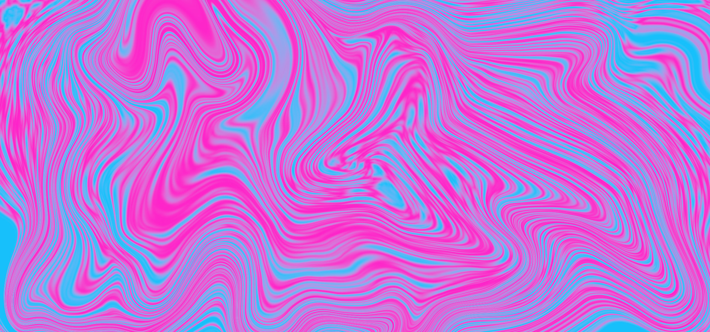
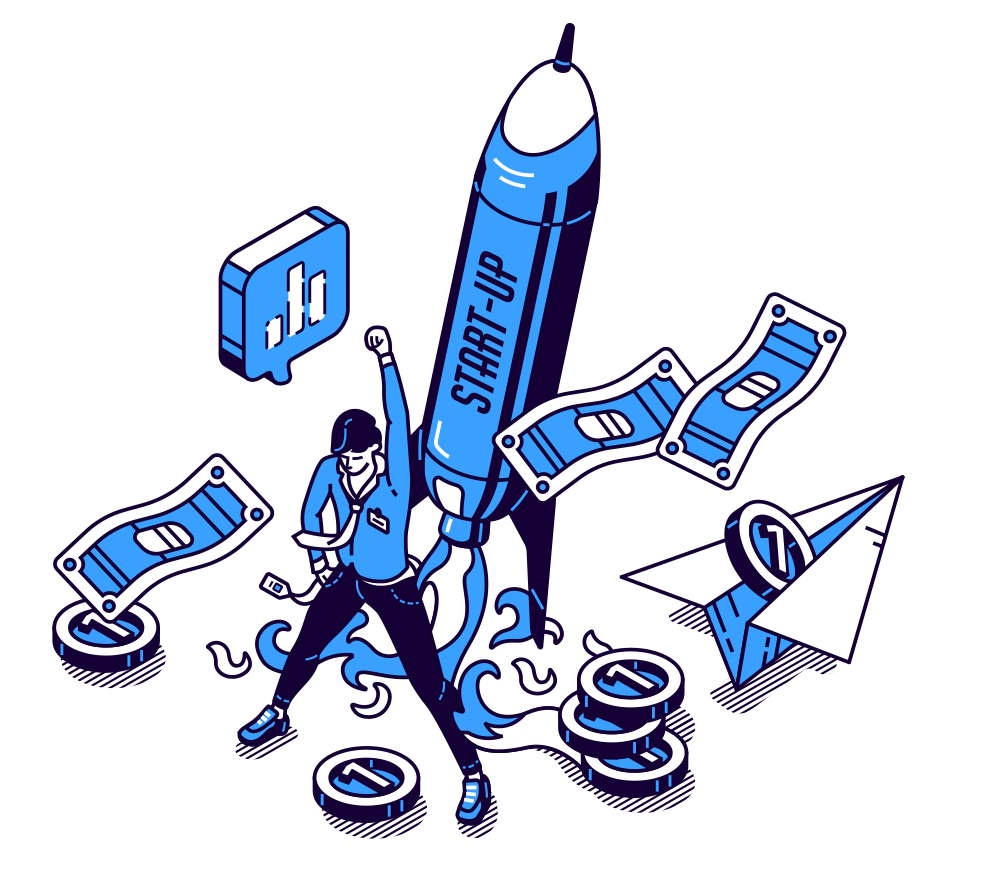

KSAWERY CRACK
Trzepie lepiej niż Twoja matka dywan.
„Moim zdaniem crack od ksawerego grudziądza jest top bo trzepie lepiej niż moja matka dywan”

Jak powstaje najsłynniejszy crack w Polsce?
Bezkompromisowy proces inżynierii domowej, który dwukrotnie wytrzymał najbardziej wnikliwe kontrole federalnych.
Produkcja
„Produkcja odbywa się w domu ksawerego. 2 razy byli u niego federalni ale nic nie znaleźli. xD”
Dystrybucja
„Ten proces jest najlepszy bo trafia to później do was - do zajebistych klientów.”
Równanie Sukcesu
Jakość + Doskonałość = Crack Od Ksawerego Grudziądza. Czysta matematyka zatwierdzona przez Sanepid i Radę Miasta.
Kalkulator: Trzepanie Dywanu
Sprawdź empirycznie, czy Twoja matka ma jakiekolwiek szanse w starciu z mikroskopijną mocą formuły Ksawerego.
Wyliczanie zaleceń Ksawerego...
Wybierz Wariant dla Siebie
Bezpieczne partie prosto z piwnicy w Grudziądzu. Wszystkie produkty testowane z zachowaniem procedur BHP.
Ksawery Classic
Oryginalna partia, od której zaczęła się legenda trzepania dywanu. Prosta, uczciwa formuła bez zbędnych wypełniaczy.
- Trzepie silniej niż cała klatka schodowa
- Pakowane w folię aluminiową spożywczą
- Rekomendowane przez Dobrego Klienta
Federal Ghost Edition
Receptura udoskonalona po wizytach służb. Odróżnia się tym, że federalni patrzyli na to z 10 centymetrów i nic nie znaleźli.
- 100% odporności na psy tropiące
- Pachnie jak proszek do pieczenia Babuni
- Darmowy skrót klawiszowy ESC w zestawie
Samuel Schick Reserve
Specjalna partia zamawiana bezpośrednio przez Pałac Prezydencki w Kinszasie. Czyste złoto Grudziądza.
- Pieczęć Prezydenta Demokratycznej Republiki Kongo
- Złote opakowanie dyplomatyczne
- Darmowa wysyłka gołębiem transkontynentalnym
Jesteś smutny? Zostawiła Cię dziewczyna?
Spokojnie, Ksawery Grudziądz Labs oferuje bezpłatną konsultację egzystencjalną. Wybierz swój aktualny stan emocjonalny:
Co Mówią Nasi Klienci?
Od lokalnych mistrzów trzepania dywanów po głowy suwerennych państw afrykańskich.
„Nigdy nie miałem tak dobrego cracku. Najlepsze ceny i doskonała jakość. Zamawiam transport do Kinszasy w każdy pierwszy wtorek miesiąca.”
„Moim zdaniem crack od ksawerego grudziądza jest top bo trzepie lepiej niż moja matka dywan. Matka próbowała pobić ten wynik, ale po godzinie zemdlała na balkonie.”
„Po 25 latach wyrzuciłam trzepaczkę z drutu do kosza. Szczypta formuły Ksawerego i perski dywan sam wypluł kurz z 2004 roku. Teraz mam czas na kawusię!”
„Byliśmy u niego 2 razy z nakazem. Przeszukaliśmy tapczan, szafki, a nawet doniczki z paprotką. Nic nie znaleźliśmy. Szacun dla Ksawerego za porządek w piwnicy.”

Dane Kontaktowe
Chcesz porozmawiać o dywanie, złożyć zamówienie hurtowe, czy po prostu sprawdzić czy Ksawery nie śpi?